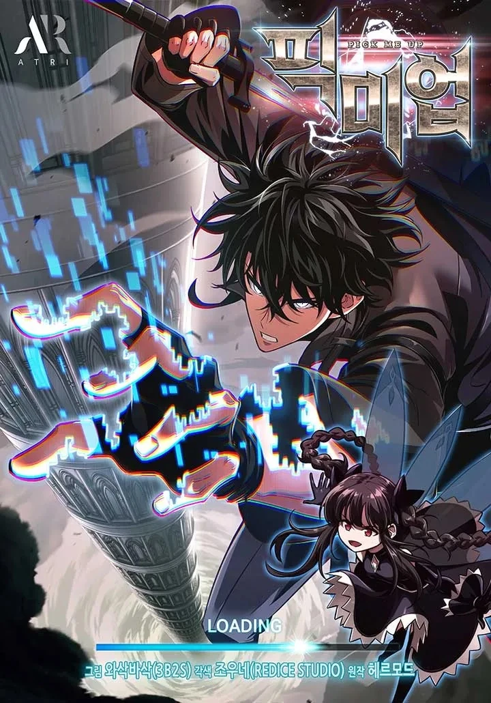
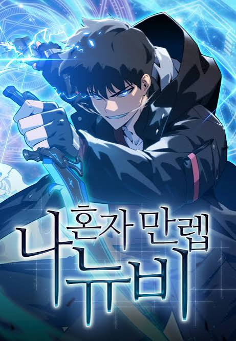

🥇 The World After The Fall
Tags: Fantasy, Transmigration, Tower
Chapter Count: 258 (Ongoing)
Author(s): S-Cynaan
Artist(s): 3B2S
Jaehwan was a normal person who was buying chips at his local convenience store. Suddenly, weird towers appeared across the globe, summoning people within. Jaehwan accepted the summons, witnessed monsters decimate his homeworld, and prevailed against the 100 levels and their respective boss monsters. At the end, he realized the Tower was an illusion, and that humanity was never destroyed. Now he fights against the people who created the Towers, which are cultivation methods for the Gods and the Lords. As he fights them all, Jaehwan swears to destroy the system and the world that wronged him. His final enemy is Big Brother, the master of the System itself.
Read at:
WEBTOON
MANGADEX
RATINGS
Story: ⭐⭐⭐⭐⭐
Art: ⭐⭐⭐⭐⭐
Pacing: ⭐⭐⭐⭐⭐
Characters: ⭐⭐⭐⭐⭐
World-Building: ⭐⭐⭐⭐⭐
TOTAL: ⭐⭐⭐⭐⭐

🥈 Solo Max-Level Newbie
Tags: Fantasy, Transmigration, Tower
Chapter Count: 284 (Ongoing)
Author(s): Maslow
Artist(s): Swingbat
Kang Jinhyeok, a gaming streamer and content creator, is the only person who has cleared the game, [Tower of Trials]. However, as the game’s popularity declines, it becomes increasingly difficult for him to continue making a living as a content creator. Jinhyeok prepares to end his 11-year-long relationship with the game and say goodbye to his humble group of subscribers. But on that very day, the Tower of Trials appears in reality with a message saying that humanity will perish unless all players clear each floor within 90 days. Jinhyeok, who knows the game better than anyone, decides to use his knowledge to his advantage and dominate the tower. It’s time to show everyone what a hardcore gamer can do!
Read at:
WEBTOON
MANGADEX
RATINGS
Story: ⭐⭐⭐⭐⭐
Art: ⭐⭐⭐⭐⭐
Pacing: ⭐⭐⭐⭐⭐
Characters: ⭐⭐⭐⭐⭐
World-Building: ⭐⭐⭐⭐⭐
TOTAL: ⭐⭐⭐⭐⭐

🥉 Pick Me Up! Infinite Gacha
Tags: Fantasy, Transmigration, System, Tower, Swordsmanship
Chapter Count: 226 (Ongoing)
Author(s): Hermod
Artist(s): REDICE Studio
1-Star heroes are just fodder for learning a boss' attack patterns. That was Han Seojin's philosophy when playing the notoriously difficult game Pick Me Up. But after being transported into the game as one of those 1-star heroes, he's got no choice but to rise in rank and defeat the player controlling him and his party. Can a gacha game character hope to defeat a player akin to being his god?
Read at:
WEBTOON
MANGADEX
RATINGS
Story: ⭐⭐⭐⭐⭐
Art: ⭐⭐⭐⭐⭐
Pacing: ⭐⭐⭐⭐
Characters: ⭐⭐⭐⭐⭐
World-Building: ⭐⭐⭐⭐⭐
TOTAL: ⭐⭐⭐⭐⭐